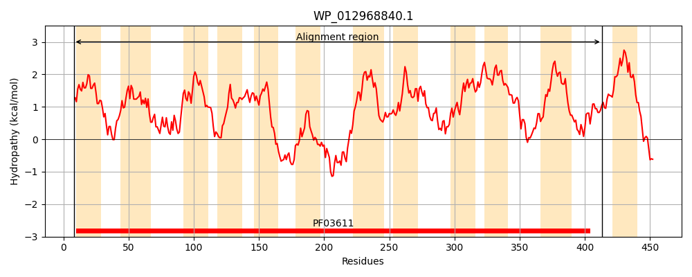
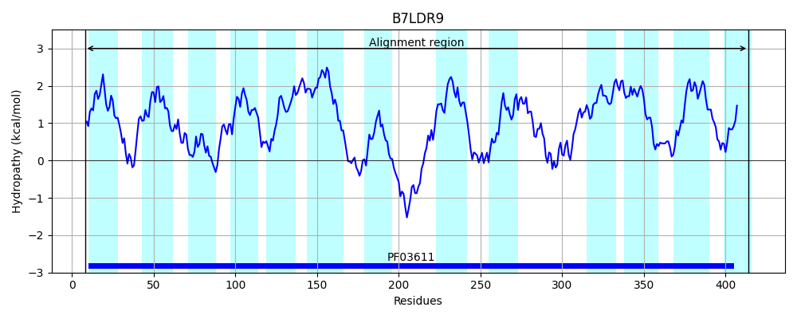
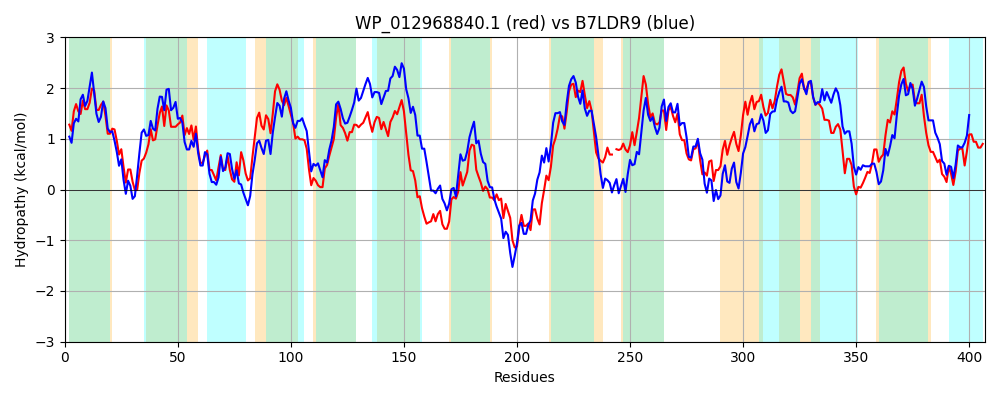

Hit Accession: B7LDR9
Hit TCID: 4.A.7.1.2
Hit Description: gnl|BL_ORD_ID|2034 gnl|TC-DB|B7LDR9|4.A.7.1.2 Putative PTS system, Specific IIC component OS=Escherichia coli (strain 55989 / EAEC) GN=vpeC PE=4 SV=1
Mach Len: 407
e:0.000000
Query TMS Count : 12
Hit TMS Count: 13
TMS-Overlap Score: 9.400000
Predicted Substrates:None
BLAST Alignment:
Score: 955 , Bit scores: 372 bits, E-value: 3.7e-126, Alignment length: 407, Percentage identity: 43
Query: 8 LAEIFSQPAFLMGLIAFVGLVALRSPGNKLLTGTLKPILGYLMLSAGAGVIVANLNPLGGIIEAGFNIRGVIPNNEAIVSVAQKMLGVETMSILLLGFIFNLIIARCTKYKYIFLTGHHSFFLACLFSAVLQAAEFHGWMLILIGGFLLGSWSAISPAIGQRYTKQVTEDGGIAMGHFGSLGYYLSAWIASRTGNPANSFADTEISEKWGFLRDTTVTTGIVMFVIYFICSAVAGSAYLSTIT-DQNMLIFSVLTGLQFAVGVAIVYNGVRLILGDLVPAFQGISQKLIPDSIPAVDCAVFFTFSPTAVVVGFISSFVGGLVGMLLLGGLGMALIIPGMVPHFFCGGTSGVFADKLGGKRGCIIASFIGGIFLAFLPAMLLPALGNLGFENSTFADFDFAVWGIIIG 413
++++ S+PA L+GLIA +GL+A + P + + GT+K I+G+++L AGAG++V++L I + F I+GV+PNNEAIVSVAQK G E I+ + N++IAR T +K+IFLTGHH+ F++ + + +L A G LI +G ++G PAI Y K+VT +A+GHF +L Y L+ +I S+ GN +S D + + FLRDT V M +I+ + AG+ + ++ +N +FS++ + FA GV I+ GVR+++ ++VPAF+GIS KL+P++ PA+DC V F ++P AV+VGF+SSF GL+GM L L M +IIPG+VPHFF G +GVF + GG+RG I+ +F G+ + FLP LLP LG++GF N+TF+D DF GI++G
Sbjct: 8 MSDVLSEPAVLVGLIALIGLIAQKKPVTECIKGTVKTIMGFVILGAGAGLVVSSLGDFANIFQHAFGIQGVVPNNEAIVSVAQKSFGKEMAMIMFFAMVINIMIARFTPWKFIFLTGHHTLFMSMMVAVILATAGMTGITLIAVGSLVVGVAMVFFPAIAHPYMKKVTGSDDVAIGHFSTLSYVLAGFIGSKFGNKEHSTEDMNVPKSLLFLRDTPVAISFTMSIIFLVTCLFAGADAVKELSGGKNWFMFSIMQSITFAAGVYIILQGVRMVIAEIVPAFKGISDKLVPNARPALDCPVVFPYAPNAVLVGFLSSFAAGLIGMFTLYLLNMIVIIPGVVPHFFVGAAAGVFGNATGGRRGAILGAFAQGLLITFLPVFLLPVLGDIGFANTTFSDADFGALGILLG 414 | Protein Hydropathy Plots: |
|---|
|  |  |
Pairwise Alignment-Hydropathy Plot:
|
|---|
|  |